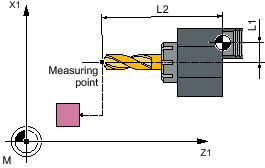
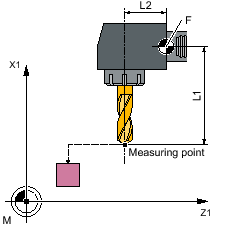
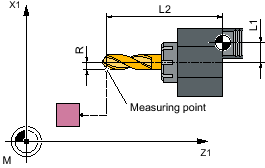
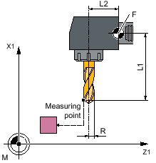
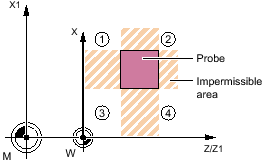

With this measuring variant, the tool length (L1 or L2) of a drill can be measured. The measuring variant checks whether the difference to be corrected with respect to the old tool length lies within a defined tolerance range:
Upper limits: Safe area TSA and dimensional difference control DIF
Lower limit: Zero offset range TZL
If this range is not violated, the new tool length is accepted in the tool offset, otherwise an alarm is output. Violation of the lower limit is not corrected.
The length (L1 or L2) of the drill is measured in the parameterized measuring axis.
Measuring length L2 | Measuring length L1 |
|---|---|
|  |  |
Measuring length L1 | Measuring length L2 |
|---|---|
|  |  |
Measuring of length: Drill (CYCLE982), example, tool position: ↓ radial position
| Note |
If the length of the drill is measured by approaching the probe from the side, then it must be ensured that the drill to be measured does not deflect the probe in the area of the twist groove or in the area of its drill tip. The requirement is that the drill radius was entered in the tool offset, otherwise, an alarm will be output. |
The tool probe must be calibrated.
The approximate tool dimensions must be entered in the tool offset data:
Tool type: 2xy (drill)
Length 1, length 2
The tool to be measured must be active with its tool offset values when the cycle is called.
The channel-specific SD42950: $SC_TOOL_LENGTH_TYPE should be assigned 2 as standard (length assignment the same as for turning tools). For special applications, the value "0" can be used.
From the starting position, collision-free approach to the probe must be possible.
The initial positions are located outside the unauthorized area (see the diagram below).
① to ④ | permissible area |
Measure drill: Possible starting positions in the 2nd axis of the plane (for G18: X)
The tool tip is positioned at the measurement path from the measuring surface.
See also:
Measuring drills - Special applications